ELEC-16 SCI
関数電卓 SCI-128 ガイド
ELEC-16 ペインの関数電卓モデル ELEC-16 SCI（SCI-128）の使い方を、ひととおり短くまとめました。式を教科書どおりの形（2D）で打ち、分数や √ のままの答えを出します。統計、2・8・10・16 進、関数の表、方程式と不等式、複素数、行列とベクトル、プログラムのモードと、物理定数、単位の換算、Σ・微分・積分もあります。
ポケコン（BASIC、機械語、CODE）の使い方は ELEC-16 ポケコン ガイド にあります。
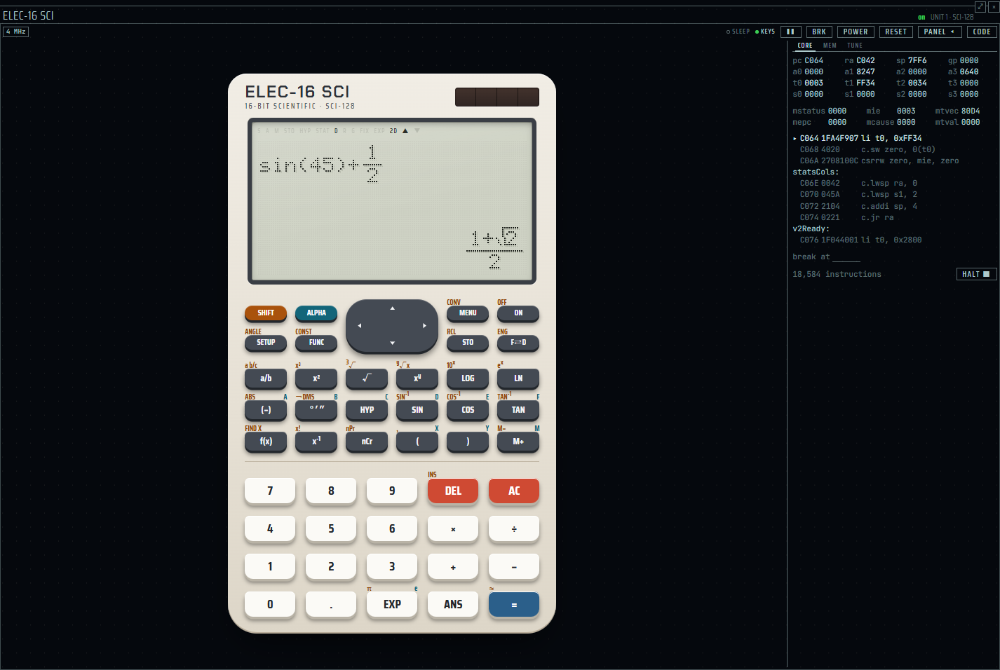
はじめの 6 歩
まずはこの 6 歩で、電卓のおおよその使い方がつかめます。キーは本体の刻印の名前で書いています。
-
電卓を出す。ペインのピッカー（Ctrl+Shift+A）で elec-16 sci の行を選びます。新しいユニット「SCI 1」で電卓が開きます。プリセットの desk と retro なら、もうタブに入っています（出し方と本体）。
-
最初の計算。34+57= で 91。続けて数だけを打って = を押すと、同じ「+57」をします（45= で 102）。これが定数計算で、AC で消えます。
-
分数を 2D で。1a/b3▶+1a/b6=。分数が上下に組まれ、分母を打ち終えたら ▶ で分数の外へ出ます。答えは 1/2 です。
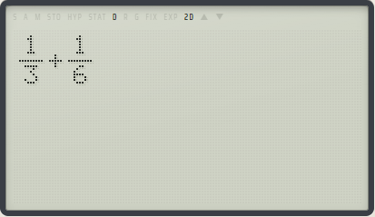
打っている途中（2 つ目の分数の中） 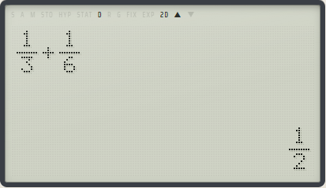
答えは 1/2 -
答えの形を変える。SIN45)+1a/b2= は (1+√2)/2 と、√ のままの形で答えます（sin 45 は √2/2）。F⇄D を押すと小数になり、続けて押すと形に戻ります。
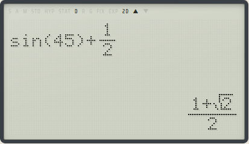
形の答え (1+√2)/2 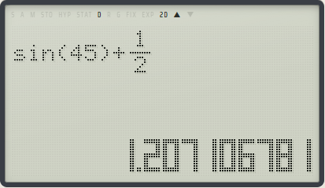
F⇄D で小数に -
モードを選ぶ。MENU で 8 つのモードが出ます。数字で選び、AC で戻ります（モード）。
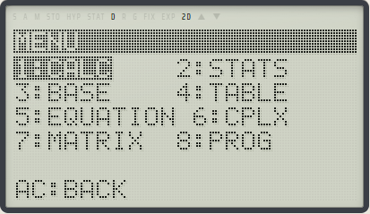
MENU の 8 つのモード -
設定を見る。SETUP で、2D / LINE、角度（DEG / RAD / GRAD）、小数の出し方などを選びます。数字で選び、AC で戻ります（SETUP）。
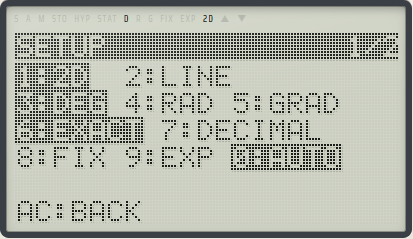
SETUP の 1 ページ目（今の設定が反転）
PC のキーボードでも打てます。数字と + - * /、Enter が =、Backspace が DEL、Delete が AC です（キー）。
出し方と本体
電卓を出す
- ピッカーから: ペインのピッカー（Ctrl+Shift+A）で elec-16 sci の行を選ぶと、新しいユニット「SCI 1」（2 台目からは SCI 2、SCI 3 …）を作って電卓を開きます。ポケコンのユニットはそのまま残ります。
- プリセットから: レイアウトのプリセット desk と retro では、電卓がタブの 2 つ目に入っています（desk はユーティリティの隣、retro は ELEC-16 と CHIP-8 の間）。本体に場所を譲るため、PANEL は畳んであります。
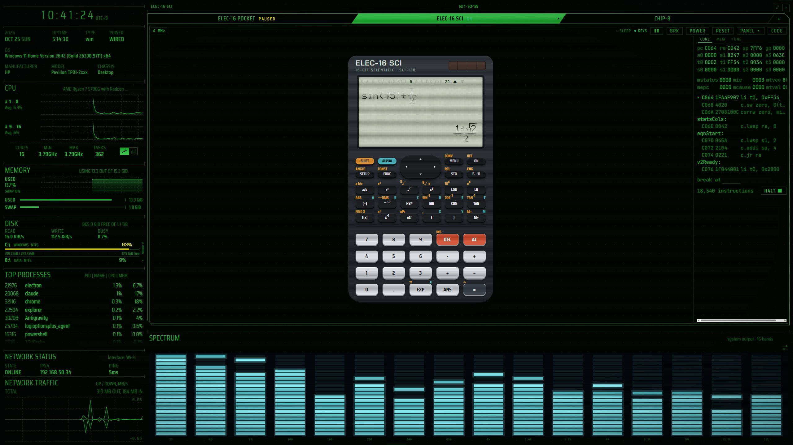
電卓はユニットごとに RAM（変数、Ans、履歴、STATS の表など）を持ち、電源を切っても残ります。
電源
- ON で電源が入ります。名前が少し出てから、前のモードの画面に戻ります。
- 電源が入っている間の ON は、いつでも AC と同じに働きます。計算の途中でも止まります。
- SHIFT ON で電源を切ります。PANEL の TUNE で、自動電源 OFF（10 分 / 30 分 / しない）も選べます。
PANEL
帯の PANEL で、右のパネルを出し入れします。電卓のパネルは CORE、MEM、TUNE の 3 つです。TUNE では、モデルの切り替え、クロック、自動電源 OFF、本体の色と描き方を選びます。
TUNE でモデルを切り替えると、そのユニットの RAM が消えます。そのため 2 度押しで確かめます。
本体の色と描き方
| 色 | 見た目 |
|---|---|
| SLATE | 濃い灰の本体に明るい灰の数のキー。SHIFT は琥珀、ALPHA は青緑 |
| CHALK | 白っぽい本体に濃い関数キーと白い数のキー |
| PLAIN | elecdex の見た目。ポケコンの PLAIN と同じく本体を描かず、液晶と枠線だけのキーを今のテーマの色で出す |
| 描き方 | 出るもの |
|---|---|
| FULL | 本体とキーのすべて |
| SIMPLE | 液晶と数のキー（0〜9、.、EXP、ANS、DEL、AC、+ − × ÷、=）だけ。4 列に並んだ縦長の本体で、ふつうの電卓のように使う |
| COMPACT | 液晶、十字キー、AC と = の 1 列。ほかは PC のキーで打つ |
| LCD | 液晶だけ。PC のキーで打つ |
描き方はペインの大きさから自動で選ばれ（SIMPLE は選ばれません）、TUNE で固定もできます。
画面
液晶は 128×64 ドットです。上が式の欄、下が答えの欄で、小数の答えは大きな数字で出ます。液晶の上には表示記号が並びます。
| 記号 | 意味 |
|---|---|
S / A | SHIFT / ALPHA を押した |
M | M が 0 でない |
STO / HYP | STO / HYP を押した |
STAT | 統計 |
D R G | 角度の単位（DEG / RAD / GRAD） |
FIX / EXP | 小数の出し方 |
2D | 2D 表示 |
▲ ▼ | 履歴や続きがある |
キー
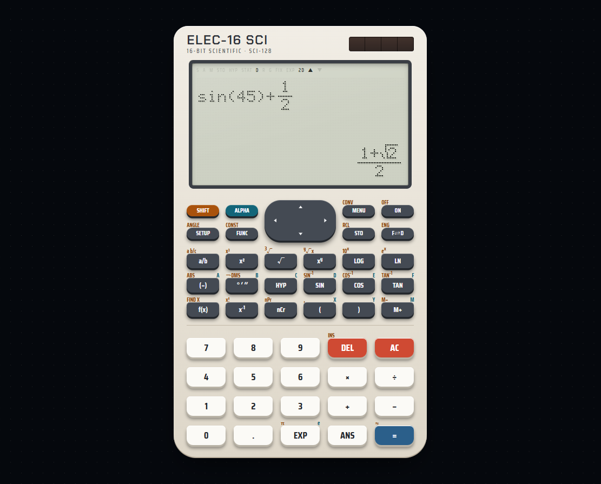
キーの面の見方
- 刻印が主の面です。そのまま押します。
- キーの上の左の小さな字が SHIFT の面です。SHIFT を押してからそのキーを押します。SLATE と CHALK では琥珀（橙）の字で、SHIFT のキーも同じ色です。
- キーの上の右の色の字が ALPHA の面（変数の字）です。ALPHA を押してからそのキーを押します。SLATE と CHALK では青緑の字です。
SHIFT の面は、そのキーの逆の関数です（LOG と 10ˣ、SIN と SIN⁻¹）。よく使う x² と √ はどちらも主の面にあり、その SHIFT 面は 3 乗（x³）と 3 乗根（∛）です。逆のないもの（gcd、lcm、% など）は FUNC のメニューにあります。
キーの並び
上の 2 段（十字キーは真ん中）:
| SHIFT | ALPHA | 十字キー ▲ ▼ ◀ ▶ | MENU / CONV | ON / OFF | |
| SETUP / ANGLE | FUNC / CONST | STO / RCL | F⇄D / ENG | ||
関数のキー（主 / SHIFT / ALPHA）:
| a/b / a b/c | x² / x³ | √ / ∛ | xʸ / ʸ√x | LOG / 10ˣ | LN / eˣ |
| (−) / abs / A | °′″ / →DMS / B | HYP / ― / C | SIN / SIN⁻¹ / D | COS / COS⁻¹ / E | TAN / TAN⁻¹ / F |
| f(x) / FIND X | x⁻¹ / x! | nCr / nPr | ( / , / X | ) / ― / Y | M+ / M− / M |
数のキー:
| 7 | 8 | 9 | DEL / INS | AC |
| 4 | 5 | 6 | × | ÷ |
| 1 | 2 | 3 | + | − |
| 0 | . | EXP / π / e | ANS | = / ≈ |
よく使うキー
- DEL はカーソルの前を消します。SHIFT DEL（INS）で上書きになり
OVRが出ます（もう一度で挿入に戻る）。AC は式を消します。 - ◀ ▶ でカーソルを動かし、▲ ▼ で履歴を見ます（2D の分数では分子と分母の行き来）。
- = で答え、SHIFT =（≈）で初めから小数で答えます。
- (−) は符号です。引き算は − のキーです。
PC のキーボード
このガイドでは、本体のキーを =、PC のキーボードのキーを Enter のように枠だけで書きます。テンキーの数字、四則と Enter も使えます。
| PC のキー | 電卓のキー |
|---|---|
| 数字、+ - * /、( )、. | 同じキー |
| ^ | xʸ |
| Enter | = |
| Backspace | DEL |
| Delete | AC |
| 矢印キー | 十字キー |
| Pause | ON |
| s c t | SIN COS TAN |
| l g | LN LOG |
| f e r ! | a/b EXP √ x! |
大文字でも同じキーで、Shift を押しながら打つとそのキーの SHIFT 面です。Ctrl・Alt 付きのキー、Tab、Esc、ファンクションキーはアプリのものなので、電卓は取りません。
式を打つ: 2D と LINE
式を打って = を押すと、下に答えが出ます。答えの後に演算子を押すと、Ans（前の答え）から自動で続きます。Ans を押す必要はありません。数や関数を押すと、新しい式になります。
- Ans から続くもの: + − × ÷、xʸ x² x³ x⁻¹ x!、nCr nPr、FUNC の mod、SI 接頭辞、→z。2D では a/b も（Ans が分子になります）
- 例:
17=のあとmod 5 =でAns mod 5、答えは 2
2D 表示
電源を入れた最初の形です。分数、√、累乗が教科書の形で組まれます。
- a/b は直前の値（数、π、変数、括弧の組、√ や分数）を分子にします。前に値がなければ空の分数で、分子から打ちます。分母を打ち終えたら ▶ で外へ出ます。
- ▲ ▼ で分子と分母を行き来します。
- 空の枠は点線の箱で、カーソルはその中に入ります。DEL は枠のところで中へ入り、空の枠は消します。
- 画面に入らないほど高い分数（分数の中の分数の中の分数…）は入らず、短いブザーが鳴ります。
- 帯分数は SHIFT a/b（a b/c）で打ちます。
LINE 表示
SETUP の 1 ページ目の 2 で切り替えます。式を 1 行の文字で打ち、分数は /、√ は √( です。CPLX、MATRIX、PROG のモードは LINE で打ちます。
計算の順位
強い順に:
- 括弧、関数、分数や √ の枠（関数の閉じ括弧は省けます。式の終わりで閉じます）
- 累乗、x²、x³、x⁻¹、x!、%（累乗は右から:
2^3^2は 512） - 符号（−）:
-2²は −4 - LINE 表示の分数
/ - nCr、nPr
- 記号のない掛け算（
2π、3(4+1)、2√3）:1÷2πは 1/(2π) = 0.159154943、6÷2(1+2)は 1 - × ÷（と mod）
- + −
関数の括弧は式の終わりで閉じます。SIN の後に続けて足すときは、) で閉じてから + を押しましょう。
定数計算
34+57= のように「数 演算子 数」を答えると、その演算が定数として残り、答えの左下に K が出ます。続けて数だけを打って = を押すと、定数の演算をします。+ − ÷ は右の数が、× は左の数が定数です。AC で消えます。
| 打つもの | 答え |
|---|---|
34+57= のあと 45= | 102（45+57） |
68×25= のあと 40= | 2720（68×40） |
79−59= のあと 56= | −3（56−59） |
56÷8= のあと 92= | 11.5（92÷8） |
角度の換算（ANGLE）
SHIFT SETUP（ANGLE）で、答え（打ちかけの式があればその答え）を次の角度の単位に換算し、SETUP の単位も切り替えます。DEG → RAD → GRAD → DEG の順です（90 は 1.570796327 → 100 → 90）。
答えの形と F⇄D
答えは、できるかぎり正確な形で出ます: 分数、√、整数と √ の和（(p + r√s)/q の形）。
| 打つもの | 答え |
|---|---|
| 1a/b3▶+1a/b6= | 1/2 |
| √8= | 2√2 |
| SIN45= | √2/2 |
| TAN15= | 2−√3 |
| 1a/b2▶xʸ3= | 1/8 |
- F⇄D で、形 → 帯分数（1 より大きい分数のとき）→ 小数 → 形と回ります。
- SHIFT =（≈）は初めから小数で答えます。
- SHIFT F⇄D（ENG）は指数が 3 の倍数の小数です。もう一度で SI 接頭辞の字になります（SI 接頭辞と ENG）。
- 式に小数点を打ったときは、小数で答えます（
0.1+0.2は 0.3。F⇄D で 3/10）。 - 途中で形の数が 10 桁を越えたり、違う √ どうしを足したりすると、その計算は小数だけで続きます。誤りにはなりません。
- 特別な角度（15° の倍数）の sin・cos・tan は形で答えます。sin 15° のように √ が 2 重になるものは小数です。
変数、Ans、M、履歴
変数
変数は A〜F、X、Y、M です。変数のキーは ALPHA 面の字のキーで、A〜F は (−)〜TAN、X は (、Y は )、M は M+ です。
- しまう: STO のあと変数のキー。答え（打ちかけの式があればその値）が入ります。
- 呼ぶ: SHIFT STO（RCL）のあと変数のキー。
- 式の中で使う: ALPHA のあと変数のキー。
変数も Ans も、分数や √ の形のまま残ります。
M（独立メモリ）
M+ で M に足し、SHIFT M+（M−）で引きます。M が 0 でない間、M が点きます。
履歴
= を押した式を 10 本まで残します。式が空か、答えの後で ▲ を押すと前の式、▼ で後の式が出ます。電源を切っても残ります。
変数、Ans、M、SETUP、STATS の表は、どのモードでも同じものです。式と履歴はモードごとに持ちます。
FUNC のメニュー
FUNC で関数のメニューが開きます。数字で選び、▼ ▲ でページを移ります。CALC では 7 ページです。関数は gcd( のように小文字で、行に入る形のまま出ます。
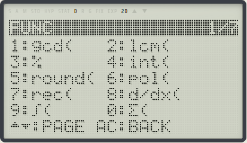
| ページ | 中身 |
|---|---|
| 1 FUNC | 1 gcd、2 lcm、3 %、4 int、5 round、6 pol、7 rec、8 d/dx、9 ∫、0 Σ |
| 2 ENG | SI 接頭辞: 1 k、2 M、3 G、4 T、5 m、6 μ、7 n、8 p、9 f |
| 3 MORE | 1 mod、2 Π(、3 →PRIME |
| 4 RANDOM | 1 rand（0〜1 の乱数）、2 dice（1〜6）、3 coin（0 か 1）、4 rint（0〜99）。= を押すたびに新しい数 |
| 5 STATS | 1〜7 n、x̄、σx、sx、ȳ、σy、sy。8 r、9 a、0 b |
| 6 STATS | 1〜5 Σx、Σx²、Σy、Σy²、Σxy。6 x′(、7 y′(、8 c、9 x₂′( |
| 7 DIST | 1 nlow(、2 nmid(、3 nup(、4 →z |
ほかのモード（STATS、BASE、CPLX、MATRIX、PROG）では、FUNC にそのモードのメニューが出ます。
1 ページ目の関数
| 関数 | 例 |
|---|---|
| gcd(a,b) 最大公約数 | gcd(12,18) = 6 |
| lcm(a,b) 最小公倍数 | lcm(4,6) = 12 |
| % | 50% = 0.5、500+25% = 625、500−25% = 375 |
| int(x) 0 の方へ切り捨て | int(-2.7) = −2 |
| round(x) 今の表示の桁で丸める | FIX 2 で round(1÷3)×3 = 0.99 |
| pol(x,y) 直交 → 極座標 | pol(3,4): X = 5、Y = 53.13010235 |
| rec(r,θ) 極 → 直交座標 | rec(2,90): X = 0、Y = 2 |
pol と rec は 2 つの答えを変数 X と Y に入れ、2 行で見せます。コンマは SHIFT ( です。
% の決まり
b% は b ÷ 100 です。+ や − の後の項が % で終わるときは、相手の b% になります: 500+25% は 625（割増）、500−25% は 375（割引）。× と ÷ はそのままで、200×5% は 10、50÷25% は 200。括弧の中の % は相手を持たないので、500+(25%) は 500.25 です。
STATS の結果を式の中で（5・6 ページ目）
STATS の表から、式を計算するときに求めます。表が LINE で X が 1、2、3、Y が 2、4、7 なら、10x̄+1 は 21、y′(4) は 9.333333333、x′(9.3333333333) は 4。表が空のときや、1-VAR の表で y の値や r・a・b を使ったときは ERR:MATH です。
度分秒、双曲線関数、そのほか
- 度分秒: °′″ を数の後で押すたびに °、′、″ が付きます（
12°30′は 12.5）。答えの後で押すと度分秒の表示と行き来します（1.51は 1°30′36″）。 - 双曲線関数: HYP のあと SIN・COS・TAN で sinh・cosh・tanh、SHIFT を挟むとその逆です（
HYP sin 1= 1.175201194）。 - ʸ√x: 3 SHIFT xʸ 8 は ∛8 = 2。奇数乗根は負の数にも使えます。
- abs: SHIFT (−) で絶対値。
SI 接頭辞と ENG
FUNC の 2 ページ目（ENG）の接頭辞を数の後ろに付けると、その数に 10 の累乗を掛けます。
| k | M | G | T | m | μ | n | p | f |
|---|---|---|---|---|---|---|---|---|
| 10³ | 10⁶ | 10⁹ | 10¹² | 10⁻³ | 10⁻⁶ | 10⁻⁹ | 10⁻¹² | 10⁻¹⁵ |
- x² と同じく直前の値に付き、答えの後なら Ans に付きます。
47k×220pは 0.00001034、1÷(2π×1k×100n)（1 kΩ と 100 nF の遮断周波数）は 1591.549431。- 接頭辞を打った式は、小数点を打った式と同じく小数で答えます（F⇄D で形）。
- 変数の M と接頭辞の M は同じ字です。
ENG で接頭辞の字に
SHIFT F⇄D（ENG）で、指数が 3 の倍数の小数になります。もう一度 SHIFT F⇄D を押すと、×10ⁿ の代わりに接頭辞の字で出します。もう一度で ×10ⁿ に戻ります。指数が 0 か、10⁻¹⁵〜10¹² の外ならブザーです。
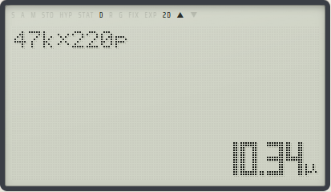
47k×220p を ENG で 2 度: 10.34μmod、Π、→PRIME
FUNC の 3 ページ目（MORE）にあります。
mod（余り）
a mod b は a を b で割った余りです（127 mod 16 は 15、1024 mod 7 は 2）。
- × ÷ と同じ強さで左から計算します（
10+7 mod 3は 11、6 mod 4×2は 4）。 - 記号のない掛け算はそれより強く結びます（A が 7 なら
100 mod 3Aは 16）。 - 0 以上の整数を 1 以上の整数で割るときだけ使えます。負の数、小数、0 で割るときは ERR:MATH です。
Π（積）
Π(f(X),a,b) は X = a, a+1, …, b の積です。決まりは Σ と同じです（Σ、d/dx、∫）。
→PRIME（素因数分解）
答えを素因数の積で見せます。式があれば先に答えを出し、式が空なら Ans を分解します。
360は 2³×3²×5、2026は 2×1013、-12は −2²×3。- Ans は変わらず、F⇄D で元の答えに戻ります。
- 2 以上 10¹⁰ 未満の整数（符号は付いてよい）だけです。0、±1、整数でない数、10¹⁰ 以上は短いブザーです。
- 画面に収まらない積は 2 行に分けます。
- 10 桁の大きな素数では数秒かかります（BUSY が点き、ON で止まります）。
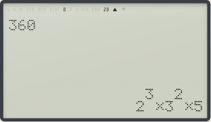
正規分布
FUNC の 7 ページ目（DIST）です。標準正規分布の確率を求めます。
| 関数 | 意味 | 例 |
|---|---|---|
| nlow(t) | −∞ から t までの確率 | nlow(1.96) = 0.975002105 |
| nmid(t) | 0 から t まで | nmid(1) = 0.341344746 |
| nup(t) | t から +∞ まで（片側の p 値） | nup(3) = 0.001349898 |
| →z | 値の後ろに付けて、STATS の表の x̄ と σx で標準化した (x − x̄)/σx | 表が 1、2、3、4、5 なら 5→z = 1.414213562（√2） |
中では 12 桁で計算し、nup(10) のような小さな値も 7.619853024×10⁻²⁴ と桁を保ちます。表が空のときの →z は ERR:MATH です。
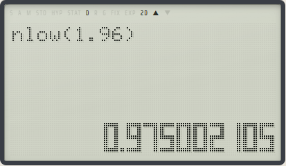
nlow(1.96) の答えCONST と CONV
CONST（物理定数）
SHIFT FUNC で、物理定数を式に入れます。▼ ▲ で 4 ページ、1〜5 で選びます。値は CODATA 2022（NIST）を 12 桁にしたもので、単位は SI です。定数は名前で式に入り（2h）、小数で計算します。CALC、TABLE、CPLX、MATRIX、PROG で使えます。
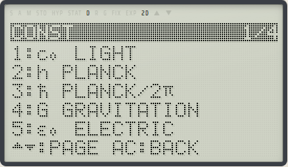
| ページ | 1 | 2 | 3 | 4 | 5 |
|---|---|---|---|---|---|
| 1 | c₀ 光速 | h プランク定数 | ħ h/2π | G 万有引力定数 | ε₀ 真空の誘電率 |
| 2 | μ₀ 真空の透磁率 | qₑ 電気素量 | mₑ 電子の質量 | mₚ 陽子の質量 | mₙ 中性子の質量 |
| 3 | u 原子質量定数 | NA アボガドロ定数 | k ボルツマン定数 | R 気体定数 | σ シュテファン＝ボルツマン定数 |
| 4 | g 標準重力加速度 | atm 標準気圧 | a₀ ボーア半径 | α 微細構造定数 | Vm 理想気体のモル体積 |
電気素量が qₑ なのは、e がネイピア数だからです。
CONV（単位の換算）
SHIFT MENU で、答え（式があれば先に答えます。なければ Ans）を別の単位に換算し、Ans にします。▼ ▲ で 4 ページ、各行の左が順、右が逆で、1〜9、0 で選びます。答えの上に換算の名前が出ます。CALC だけで使えます。
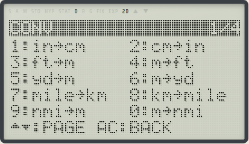
| ページ | 換算 |
|---|---|
| 1 | in↔cm、ft↔m、yd↔m、mile↔km、nmi↔m（海里） |
| 2 | acre↔m²、gal↔L（米）、floz↔mL（米）、oz↔g、lb↔kg |
| 3 | °F↔°C、km/h↔m/s、kgf↔N、atm↔Pa、mmHg↔Pa |
| 4 | kgfm↔J、cal↔J（熱化学カロリー）、hp↔W（英馬力）、kWh↔MJ、eV↔J |
- 2 SHIFT MENU 1（in→cm）は 5.08。換算の数は形のまま掛けるので、2D なら F⇄D で 127/25。
100を °F→°C で 37.77777778、36を km/h→m/s で 10。
Σ、d/dx、∫
FUNC の 1 ページ目の 8・9・0 と、3 ページ目（MORE）の Π( です。どれも最初の引数が X の式で、引数をコンマ（SHIFT (）で区切ります。計算の間だけ X を変え、終わると元に戻します。
| 関数 | 意味 | 例 |
|---|---|---|
| Σ(f(X),a,b) | X = a, a+1, …, b の和。a ≤ b の整数、項は 1000 まで。形のまま計算 | Σ(1/X,1,4) = 25/12、Σ(X²,1,10) = 385 |
| Π(f(X),a,b) | 同じ範囲の積。決まりは Σ と同じ | Π(X,1,5) = 120、Π(1+1/X,1,9) = 10、Π(X/2,1,3) = 3/4 |
| d/dx(f(X),a) | X = a での傾き（数値微分）。答えは小数 | d/dx(X³,2) = 12、d/dx(ln(X),2) = 0.5 |
| ∫(f(X),a,b) | a から b までの積分（数値積分） | ∫(X²,0,3) = 9、∫(X,3,1) = −4 |
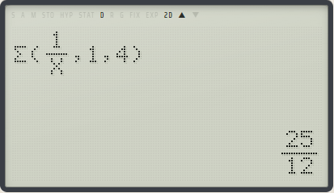
Σ(1/X,1,4) は 25/12- DEG で
d/dx(sin(X),0)は π/180（0.0174532925）。計算の精度が足りないときは 9 桁に丸めます。 - RAD で
∫(sin(X),0,π)は 2。端の値は使わないので、∫(1/√(X),0,1)（= 2）のように端で無限大になる式も計算できます。 - ∫ の中に ∫ は入れられません（ERR:MATH）。
f(x) と FIND X
式の中の X を変えながら計算します。X は ALPHA ( で打ちます。
f(x)
- X を使った式を打ちます（例:
X²+1）。 - f(x) を押すと
X?と聞かれます。今の X の値が出ているので、そのままなら =、別の値なら打って =。 - その X で式を計算します（X = 3 なら 10）。もう一度 f(x) で別の X を試せます。
FIND X
SHIFT f(x)（FIND X）は、式が 0 になる X を、X? の値から探します（ニュートン法）。見つかった X は Ans と X に入り、DIFF= にその X を入れたときの式の値（0 との差。0 に近いほど正確な解）が出ます。X²−2 を 1 から探すと 1.414213562、−1 から探すと −1.414213562。見つからなければ ERR:FIND です。
X? の値には、ALPHA で変数も打てます（STATS・EQUATION・MATRIX の升も同じ）。
SETUP
SETUP で設定のページが開きます。▼ ▲ でページを移り、AC で戻ります。項目の組ごとに今の設定が反転していて、数字を押すとその組の反転が押した項目に移ります。設定は電源を切っても残ります。
| ページ | キー | 設定 |
|---|---|---|
| 1 | 1 / 2 | 2D / LINE |
| 1 | 3 / 4 / 5 | 角度: DEG / RAD / GRAD |
| 1 | 6 / 7 | 答えを分数・√ の形（正確な値）で先に / 小数で先に |
| 1 | 8 / 9 / 0 | 小数の出し方: FIX（続けて小数点以下の桁）/ EXP（続けて有効桁。0 は 10 桁）/ AUTO（AUTO のときにもう一度 0 で AUTO2） |
| 2 | 1 / 2 | 1 より大きい分数: 仮分数（そのまま）/ 帯分数で |
| 2 | 3、= | メモリーをすべて消す（A〜F、X、Y、M、Ans、STATS の表、CPLX の Ans、行列。プログラムは消さない）。3 を押して = で消し、ほかのキーでやめる |
| 2 | ◀ ▶ | 液晶のコントラスト |
- AUTO は、液晶の 10 桁に入る間は小数、10¹⁰ 以上と 10⁻⁹ 未満は指数で出します。AUTO2 は 0.01 未満も指数で出します（
3÷1000は 3×10⁻³）。 - FIX と EXP は小数の答えにだけ効き、分数と √ の形には効きません。
モード（MENU）
MENU の 1〜8 でモードを選びます。今のモードが反転していて、AC で戻ります。式と履歴はモードごとに持ち、戻れば続きからです。
| 番号 | モード | すること |
|---|---|---|
| 1 | CALC | ふつうの計算（ここまでの章） |
| 2 | STATS | 統計と回帰 |
| 3 | BASE | 2・5・8・10・16 進の 32 ビット整数 |
| 4 | TABLE | 関数の表 |
| 5 | EQUATION | 連立方程式、2 次・3 次方程式、不等式 |
| 6 | CPLX | 複素数 |
| 7 | MATRIX | 行列とベクトル |
| 8 | PROG | プログラム |
CALC
電源を入れた最初のモードで、ここまでの章はすべて CALC の話です。CONV は CALC だけで使えます。
STATS（統計）
- 種類を選びます: 1:1-VAR（1 変数）、2 変数の 2:LINE（y = a + bx）、3:QUAD（y = a + bx + cx²）、4:EXP（y = a·e^(bx)）、5:LOG（y = a + b·ln x）、6:PWR（y = a·x^b）、7:INV（y = a + b/x）。8 で FREQ（度数）の列を出し入れします。
- 表に数を打ち、= で入れます（下の升へ進みます）。升には式も打てます。十字キーで升を動きます。40 行まで。
- 何も打たずに = で結果が出ます。▲ ▼ でページ、AC で表へ戻ります。
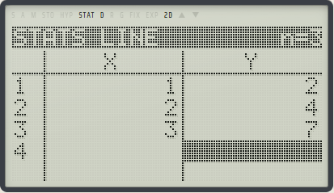
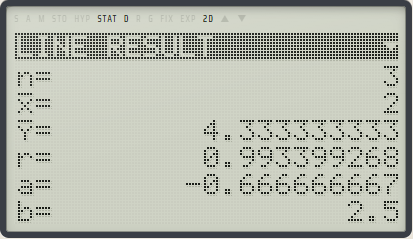
- 結果: n、x̄、σx（母集団の標準偏差）、sx（標本の標準偏差）、Σx、Σx²。2 変数ではさらに ȳ、r、a、b、c（QUAD だけ）、σy、sy、Σy、Σy²、Σxy。値のないものは
-です。 - EXP・LOG・PWR・INV は、データをまっすぐにして直線をあてはめます。r、a、b はその直線のもので、平均や標準偏差は入力したデータそのものです。
- 表の FUNC: 1 行を挿入、2 行を削除、3 全部消す、4 種類を選び直す。
- 推定値や結果は CALC の FUNC の 5・6 ページ目から式に使えます（FUNC のメニュー）。
例: X が 2、4、6 で FREQ が 1、2、1 なら、n = 4、x̄ = 4、σx = 1.414213562、sx = 1.632993162、Σx = 16、Σx² = 72。
BASE（2・5・8・10・16 進）
32 ビットの整数（2 の補数）で計算します。
- 基数は FUNC の 1 ページ目の 1:HEX、2:DEC、3:OCT、4:BIN、5:PEN（5 進）か、F⇄D で回します。今の基数が帯の右に出ます。
- HEX の A〜F は (−)、°′″、HYP、SIN、COS、TAN を ALPHA なしで押します。基数にない数字は入りません。
- + − × ÷（÷ は 0 の方へ切り捨て）と、FUNC の 2 ページ目の 1:AND、2:OR、3:XOR、4:XNOR、5:not(、6:neg(、7:mod（HEX で
FF mod 10は F）。AND は OR・XOR・XNOR より強く結びます。 - どの計算の後も 32 ビットに戻します（DEC で
2147483647+1は −2147483648）。 - 答えは今の基数の値と、残りの 3 つの基数で同時に出ます。BIN は 16 ビットずつで、▲ ▼ で上と下の半分を見ます。足もとに 16 ビットがドットの列でも出ます。
- PEN では 14 桁の 5 進で出し、下に HEX・DEC・OCT・BIN を並べます（
1234は DEC 194）。
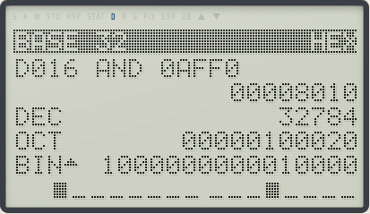
D016 AND 0AFF0 は 00008010（DEC 32784）TABLE（関数の表）
- f(X) を打ちます（X は ALPHA (）。
- = を押すと START?、END?、STEP? を順に聞かれます。
- X と f(X) の表が出ます（30 行まで）。▲ ▼ で動き、AC で f(X) に戻ります。
例: X²−2X、START 1、END 5、STEP 1 で、f(X) は −1、0、3、8、15。行が 30 を越えるか STEP が 0 なら ERR:RANGE です。
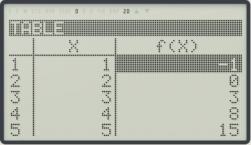
EQUATION（方程式と不等式）
- 種類を選びます: 1:aX+bY=c、2:aX+bY+cZ=d、3:aX²+bX+c=0、4:aX³+bX²+cX+d=0。
- 係数を表に打ち、= で入れます（右へ、行の終わりで次の行へ）。
- 何も打たずに = で解きます。AC で係数に戻ります。
- 連立方程式と 2 次方程式は、係数が整数や分数なら答えも分数や √ の形です。
- 2 次方程式の解が虚数なら
re ± im iで出ます（3X²+2X+1=0は −1/3 ± √2/3 i）。▼ で頂点（X²−2X−1 なら X = 1、Y = −2）。 - 3 次方程式は 3 つの解（
X³−6X²+11X−6=0は 3、2、1）。 - 解が 1 つに決まらない連立方程式は
NO ONE SOLUTIONです。 - 方程式の答えは、形があれば形で、なければ小数で出ます。F⇄D での切り替えはありません（不等式にはあります。下）。
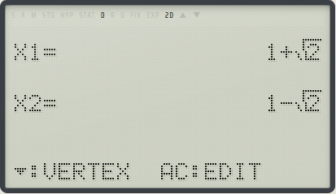
EQUATION の不等式
種類の画面で ▼ を押すと、2 ページ目に 2 次の不等式（1:aX²+bX+c>0、2:<0、3:≥0、4:≤0）、3 ページ目に 3 次の不等式（aX³+bX²+cX+d の同じ 4 つ）があります。係数の打ち方は方程式と同じです。
- 答えは X の範囲を 1 行に 1 つ:
X²−X−6>0は X<−2 と 3<X、X²−X−6≤0は −2≤X≤3、X³−6X²+11X−6>0は 1<X<2 と 3<X。 - 根は分数や √ の形のまま出ます（
X²+X−1<0は (−1−√5)/2<X<(−1+√5)/2）。1 行に収まらなければ 6 桁の小数です。F⇄D で小数と形を行き来します。 - 重解（重なった根）や解のないときも書き分けます:
X²−2X+1>0は X≠1、≤0は X=1、≥0はALL REAL NUMBERS（すべての実数）、<0はNO SOLUTION（解なし）。 - a が負なら、不等号の向きも合わせて解きます（
−X²+X+6≥0は −2≤X≤3）。a が 0 なら ERR:MATH です。
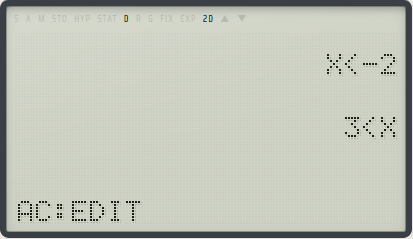
CPLX（複素数）
式は LINE 表示で打ちます。i は HYP、∠ は SHIFT HYP です（FUNC からも打てます）。
- 四則、(−)、x²、x³、x⁻¹、xʸ、√ が使えます:
(1+2i)(3−i)は 5+5i、1÷iは −i、√(−4)は 2i、(1+i)^4は −4、e^(iπ)は −1。 - 極形式は
r∠θ（θ は SETUP の角度）。2∠90は 2i。 - FUNC: 1 i、2 ∠、3 abs(（大きさ）、4 arg(（偏角）、5 conj(（共役）、6 Re(、7 Im(。
- 答えは 2 行（上が実部、下が虚部）。F⇄D で r と ∠θ の 2 行と行き来します（5+5i は 7.071067812 と ∠45）。
- sin や log などの関数は、虚部が 0 の数にだけ使えます。変数と定数は実数として使えます。
- CPLX の Ans は CPLX だけのもので、CALC の Ans は変わりません。STO、RCL、M+、f(x) は使いません。
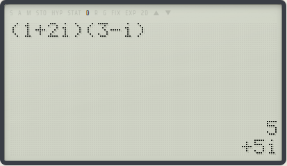
(1+2i)(3−i) = 5+5iMATRIX（行列とベクトル）
行列は MatA〜MatD と答えの MatAns で、3×3 までです。ベクトルは 1 行か 1 列の行列（成分 2 つか 3 つ）です。
- FUNC の 3 ページ目（EDIT）で 1〜4 の行列を選び、行の数と列の数を 1〜3 で打ちます（= で今の大きさのまま）。
- 升の表に成分を打ち、= で入れます。何も打たずに = か AC で式に戻ります。
- 式を打って = で計算します。FUNC の 1 ページ目で MatA〜MatAns、2 ページ目で det( trn( dot( cross( angle( を打ちます。
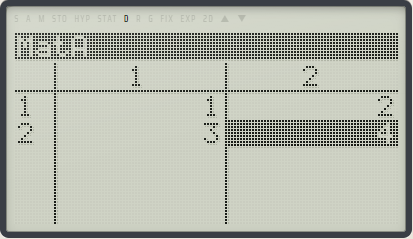
- 演算: + −（同じ大きさどうし）、×（行列どうし・数と）、÷ 数、(−)、x²、x³、x⁻¹（逆行列）、xʸ（−9〜9 の整数乗）、det(（行列式）、trn(（転置）。
- ベクトル: dot(u,v)（内積）、cross(u,v)（外積）、abs(v)（長さ）、angle(u,v)（なす角）。
- 例: MatA = [[1,2],[3,4]] なら
det(MatA)は −2、MatA⁻¹は [[−2,1],[1.5,−0.5]]。MatB = [1,2,3]、MatC = [4,5,6] ならdot(MatB,MatC)は 32、cross(MatB,MatC)は [−3,6,−3]。 - 答えが行列なら MatAns に入り、升の表で見せます。数なら大きな数字で、Ans に入ります。
- 大きさが合わないと ERR:DIM、逆行列のない行列の x⁻¹ は ERR:MATH です。成分は小数で持ちます。
PROG（プログラム）
プログラムは 4 本（P1〜P4）、1 本 199 ステップまでで、電源を切っても残ります。
- 一覧で 1〜4 を押すと、そのプログラムを打てます（LINE 表示）。AC で一覧に戻り、一覧の AC で CALC へ。
- = で走らせます。最後に計算した値が Ans になり、プログラムの下に出ます。
- ON でいつでも止まります。
?と▶で待っている間は AC でも止まります。
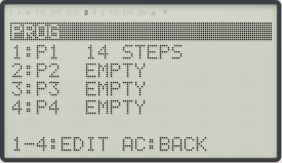
文は : で区切ります。FUNC の初めの 3 ページがプログラムの記号で、その後に CALC の FUNC が続きます。
| 書き方 | 意味 |
|---|---|
式 | 計算して Ans に |
式→V | 計算して変数 V に（→ は STO で打てます） |
式▶ | 値を出して、= を待つ |
?→V | V? と聞き、打った式の値を V に |
条件⇒文 | 条件が 0 でないときだけ文を行う |
= ≠ < > ≤ ≥ | 比べる（正しければ 1、違えば 0） |
lbl n / goto n | n（0〜9）の位置へ |
?→A:?→B:√(A²+B²)直角三角形の斜辺です（A = 3、B = 4 で 5）。
1→X:lbl 1:X▶:X+1→X:X≤3⇒goto 11、2、3 を順に出します。
ないラベルへの goto は ERR:SYNTAX です。FUNC の 3 ページ目の 0（CLEAR）でプログラムを消します。
誤りの画面
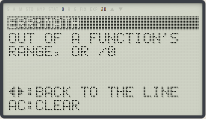
| 誤り | 意味 |
|---|---|
| ERR:MATH | 関数の範囲の外、0 で割った、大きすぎる |
| ERR:SYNTAX | 式が読めない |
| ERR:STACK | 括弧や関数の入れ子が深すぎる |
| ERR:FIND | FIND X が X を見つけられなかった |
| ERR:RANGE | TABLE の START・END・STEP が 1〜30 行にならない |
| ERR:DIM | MATRIX で、行列の大きさが計算に合わない |
◀ ▶ で式に戻ります。誤りを見つけた位置にカーソルがあるので、そこを直して = を押し直します。AC で式を消します。
数と範囲
- 数は 10 進の 12 桁（表示は 10 桁）、指数は ±99。
- 分数や √ の形の数は 10 桁まで、√ の中は 2〜99。
- 式は 199 トークン（BASE は 99）まで。履歴は CALC が 10 本、BASE が 5 本。
- n! は 69 まで、STATS は 40 行、TABLE は 30 行。
- Σ は 1000 項まで、行列は 3×3 まで、プログラムは 4 本で 1 本 199 ステップまで。
困ったとき
答えが小数で出て、分数にならない
式に小数点や SI 接頭辞を打ったとき、SETUP で「小数で先に」（1 ページ目の 7）を選んでいるとき、LINE 表示のときは小数で答えます。F⇄D で形に変えられます。形の数が 10 桁を越えた計算や、違う √ どうしの足し算は、小数だけになります。
sin の後に足したつもりが、答えが違う
関数の括弧は式の終わりで閉じるので、sin 45 + 1/2 と打つと sin(45+1/2) になります。) で閉じてから続けます。
分数の分母から出られない
▶ で分数の外へ出ます。
マイナスを打ったら ERR:SYNTAX になった
(−) は符号で、値の後ろでは引き算になりません（2(−)3 は SYNTAX）。引き算は − のキーです。
1÷2π が 0.159… になる
記号のない掛け算は × ÷ より強く結ぶので、1÷2π は 1/(2π) です。(1÷2)×π が欲しいときは括弧を使います。
角度の答えがおかしい
液晶の上の D R G で、今の角度の単位を確かめます。SETUP の 3 / 4 / 5 で切り替えます。
計算が終わらない、BUSY が点いたまま
ON（PC では Pause）で止まります。→PRIME で 10 桁の大きな素数を分解すると数秒かかります。
PC のキーが効かない
ペインをクリックして、キーがペインに届くようにします。Ctrl・Alt 付きのキー、Tab、Esc、ファンクションキーはアプリのものなので、電卓には届きません。
キーが小さくて押しにくい、本体が出ない
ペインが狭いと、本体の描き方が COMPACT や LCD に変わります。ペインを広げるか、PANEL を畳むか、TUNE で描き方を選びます。
変数やメモリーを全部消したい
SETUP の 2 ページ目で 3 を押し、= で消します。プログラムは消えません。
プログラムも含めて、まっさらな電卓から始めたいときは、ペインのピッカーの elec-16 sci でもう 1 台、新しい電卓（新しいユニット）を出します。今の電卓は残ったままです。
電源を切ったら、計算はどうなる?
変数、Ans、M、履歴、SETUP、STATS の表、行列、プログラムは、電源を切っても残ります。TUNE でモデルを切り替えたときだけ、RAM が消えます。
もっと詳しく
このガイドは要点だけです。キーごとの働き、モードの細かい決まり、例のすべては取扱説明書にあります。
- ELEC-16 SCI（SCI-128）取扱説明書
- ELEC-16 SCI の設計（画面、キー表、ROM、RAM の地図）
- ELEC-16 ポケコンのガイド